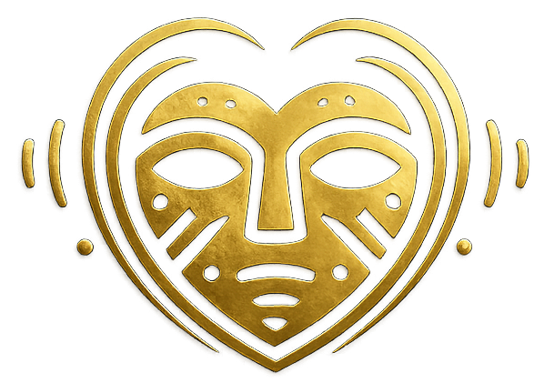

Misión
Brindar herramientas, formación y espacios de desarrollo que fortalezcan la carrera de músicos y agrupaciones, promoviendo la profesionalización, la disciplina y la visibilidad del talento artístico colombiano.
"Forjando identidad cultural desde Cundinamarca para el mundo."
Johnfer Laverde es músico eufonista, director de banda sinfónica y gestor cultural. Su carrera articula la formación musical, la gestión de proyectos culturales y la dirección artística, con impacto a nivel municipal, departamental y nacional en Colombia.
Su pasión por la música tradicional colombiana y los procesos pedagógicos lo ha llevado a crear plataformas de gran impacto que transforman comunidades a través del arte sonoro.
Brindar herramientas, formación y espacios de desarrollo que fortalezcan la carrera de músicos y agrupaciones, promoviendo la profesionalización, la disciplina y la visibilidad del talento artístico colombiano.
Consolidar una red de formación, intercambio y gestión cultural que conecte a artistas e instituciones a nivel nacional e internacional, fomentando la interculturalidad y el reconocimiento del arte colombiano.
Tres frentes complementarios: festival internacional, fundación cultural y banda tradicional. Diferentes públicos, una misma raíz panche.
Plataforma académica y artística de eufonio y bombardino en Colombia. Desde 2020, reúne maestros nacionales e internacionales.
Ver festival
Plataforma de transformación social que conecta identidad ancestral, música, tecnología, deporte y medio ambiente.
Ver fundaciónBanda de la Virgen del Carmen de Nocaima — formación y circulación musical con identidad tradicional.
PróximamenteUna raíz, tres latidos.